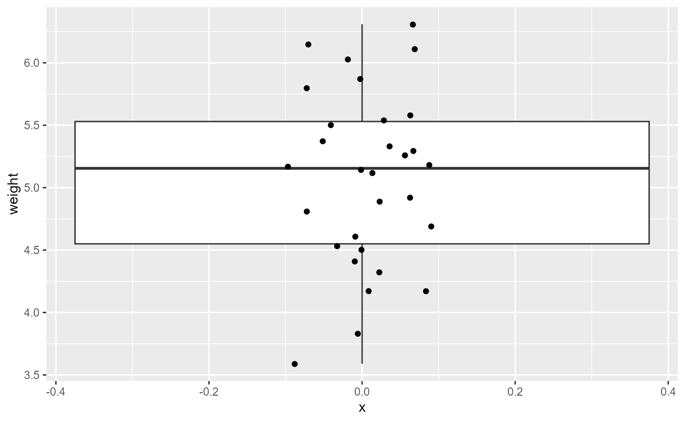
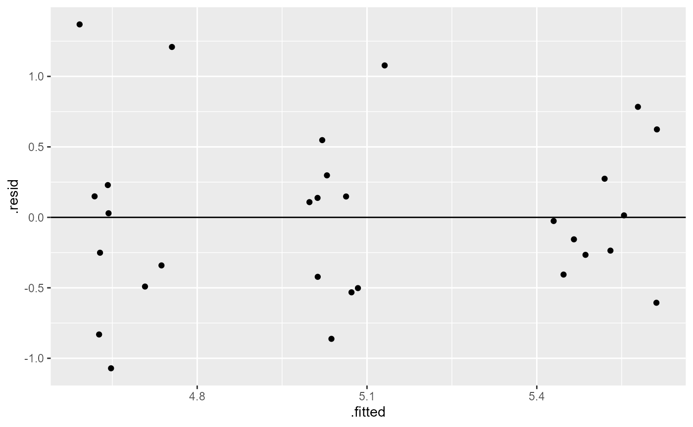

vignettes/articles/lab_10_anova.Rmd
lab_10_anova.RmdThis lab will demonstrate how to perform a one-way ANOVA in R. This includes checking assumptions, fitting the linear model, and interpreting the results/
For this lab, we will be using the dplyr and
ggplot2 packages. Make sure both packages are installed on
your computer, and then run the following code:
We will use the PlantGrowth data which comes with base
R. Load the data by running the following command:
data("PlantGrowth")First we will take a look at the PlantGrowth data
names(PlantGrowth)## [1] "weight" "group"
dim(PlantGrowth)## [1] 30 2
head(PlantGrowth)## weight group
## 1 4.17 ctrl
## 2 5.58 ctrl
## 3 5.18 ctrl
## 4 6.11 ctrl
## 5 4.50 ctrl
## 6 4.61 ctrl
summary(PlantGrowth)## weight group
## Min. :3.590 ctrl:10
## 1st Qu.:4.550 trt1:10
## Median :5.155 trt2:10
## Mean :5.073
## 3rd Qu.:5.530
## Max. :6.310We can see that this data has 30 observations (rows) across two
variables (columns). The weight variable records the dry
weight of plants and the group variable indicates which of
three experimental treatments the individual plants were assigned. The
three treatments are:
distinct(PlantGrowth, group)## group
## 1 ctrl
## 2 trt1
## 3 trt2Let’s start by plotting all of the data, without considering the groups.
ggplot(PlantGrowth,
aes(x = 0,
y = weight)) +
geom_boxplot()+
geom_point(
position = position_jitter(width = 0.1)) 
Now, we will add the grouping variable to see how the variability is distributed across treatment types.
ggplot(PlantGrowth,
aes(x = group,
y = weight,
color = group)) +
geom_boxplot()+
geom_point(
position = position_jitter(width = 0.1)) These data look to have approximately equal variation across the
treatment groups. There are a couple of “high” data points in
trt1, but ANOVA is fairly robust to these assumptions, and
this looks ok for further analysis.
We can also formally test for equal variances using Levene’s test or Bartlett’s test. For now, we will just assess this visually looking at the boxplots of each group. We will return to formal tests of equal variance later in the semester.
We can also check to see if the residuals are normally ditributed by creating a QQ-plot.
ggplot(PlantGrowth,
aes(sample = weight)) +
stat_qq()+
stat_qq_line()All of the observations (points) fall nearly directly on the reference line, so once again we pass this assumption and can continue with an Analysis of Variance (ANOVA).
In an ANOVA analysis, we are testing whether or not there is a difference in at least two of the group means in our data. It is easy to write out the Null hypothesis as:
\[H0: \mu_1 = \mu_2 = \mu_3 ... = \mu_i\] Or, by saying that “all means are equal”.
Our alternative hypothesis is that “at least one mean is different”. Becasue this inequality could happen between any pairwise combinations, it is no simple task to write these out mathematically, so instead we generally say:
\[HA: \text{"At least one mean is different"}\]
lm()
Let’s first fit a linear model to the data, and check our post-model fit assumption with a fitted vs. residuals plot.
plant_lm <- lm(weight ~ group, data = PlantGrowth)
ggplot(plant_lm,
aes(x = .fitted, y = .resid)) +
geom_point(
position = position_jitter(
width = 0.1,
height = 0)) +
geom_hline(yintercept = 0)
In this plot, the absolute magnitude of the maximum and minimum y-values are approximately the same (-1, 1), and there is no clear pattern
In order to get the statistical values for the ANOVA table, we need
to use the anova() function on the model fit object.
anova(plant_lm)## Analysis of Variance Table
##
## Response: weight
## Df Sum Sq Mean Sq F value Pr(>F)
## group 2 3.7663 1.8832 4.8461 0.01591 *
## Residuals 27 10.4921 0.3886
## ---
## Signif. codes: 0 '***' 0.001 '**' 0.01 '*' 0.05 '.' 0.1 ' ' 1This table gives us the two degrees of freedom for the model (2, and 27), as well as the sum of squares, the mean of squares, and for the group factor we also get the F-value and the p-value.
The degrees of freedom for the group factor is equal to the number of groups - 1. Here we have 3 groups - 1 = 2 degrees of freedom.
The degrees of freedom for the residuals is the total number of observations (30) minus 1 for each group (30 - 3 = 27).
The F-value is similar to the t-value from the t-test analyses we ran, and is a measure of the ratio of the signal (differences in group means) to the noise (variation in groups). If there was no treatment effect (i.e., no “signal”) the ratio would be ~1. Larger F-value indicate more signal to noise, and are interpreted as there being a treatment effect.
The p-value is an indication of the likelihood of observing the data (i.e., F-value, signal / noise ratio) we have if the null hypothesis was true. In this case, a p-value of 0.016 is less than \(\alpha = 0.05\), and we can conclude that there is a significant difference between at least two of the means.
Remember that the hypotheses for ANOVA are either that all means are the same, or that at least one was different. ANOVA can only tell us that there is a difference. Therefore, out interpretation would look something like this:
Based on the data, we can conlude that at least one of the means in the fertilizer groups are significantly different (one-way ANOVA: \(F_{2, 27}= 4.85\), \(p = 0.016\))
In order to see which means are different, we can view the
summary output from the lm() model.
summary(plant_lm)##
## Call:
## lm(formula = weight ~ group, data = PlantGrowth)
##
## Residuals:
## Min 1Q Median 3Q Max
## -1.0710 -0.4180 -0.0060 0.2627 1.3690
##
## Coefficients:
## Estimate Std. Error t value Pr(>|t|)
## (Intercept) 5.0320 0.1971 25.527 <2e-16 ***
## grouptrt1 -0.3710 0.2788 -1.331 0.1944
## grouptrt2 0.4940 0.2788 1.772 0.0877 .
## ---
## Signif. codes: 0 '***' 0.001 '**' 0.01 '*' 0.05 '.' 0.1 ' ' 1
##
## Residual standard error: 0.6234 on 27 degrees of freedom
## Multiple R-squared: 0.2641, Adjusted R-squared: 0.2096
## F-statistic: 4.846 on 2 and 27 DF, p-value: 0.01591Here, we can see that we have three coefficients:
(Intercept), grouptrt1, and
grouptrt2.
Each of these coefficient estimates has an associated Null and Alternative hypothesis.
\[ H0: \beta_0 = 0 \] \[ HA: \beta_0 \ne 0 \] As mentioned previously, we are rarely interested in this hypothesis.
The (Intercept) coefficient is the mean weight estimate
for the ctrl group, and is equal to 5.032. The p-value
associated with this simply means that the data support the conclusion
that the mean weight of the control plants are not 0.
The other two coefficients represent the estimated difference between
the ctrl group and the respective trt
groups.
The null hypothesis for each of these coefficients is:
\[H0: \beta_i = 0\]
and the Alternative is:
\[HA: \beta_i \ne 0\]
The p-values for both of the other coefficients is \(> \alpha = 0.05\), so we fail to reject these hypotheses. In other words, the data do not support a significant difference in plant weights for either treatment when compared with the control group.
We can combine the coefficient estimates to calculate the mean plant weight for the two treatment groups:
# print out all the coefficient estimates
coef(plant_lm)## (Intercept) grouptrt1 grouptrt2
## 5.032 -0.371 0.494
# mean estimate for trt1, manual
5.032 - 0.371## [1] 4.661
# or by using the coefficient estimates:
as.numeric(coef(plant_lm)[1] + coef(plant_lm)[2])## [1] 4.661
# mean estimate for trt2, manual
5.032 + 0.494## [1] 5.526
# or by using the coefficient estimates:
as.numeric(coef(plant_lm)[1] + coef(plant_lm)[3])## [1] 5.526We can also look at the confidence intervals for the three
coefficients using the confint() function:
confint(plant_lm)## 2.5 % 97.5 %
## (Intercept) 4.62752600 5.4364740
## grouptrt1 -0.94301261 0.2010126
## grouptrt2 -0.07801261 1.0660126Notice that both confidence intervals for the difference cross zero (lower bound is negative, upper bound is positive). This is a good indication that there is not a significant difference between the control group and either treatment.
lm() Interpretation - Following Hector (2021)
The plants from the control group had an average dry weight of 5.032 (95% CI: 4.63, 5.44) grams, and the difference in dry weights for treatment 1 was -0.37 (-0.94, 0.20) while the difference in dry weights for treatment 2 was 0.49 (-0.08, 1.07)
You may have noticed that results from the ANOVA table above indicated that there was at least one significant difference between means, but the p-values of 95%CIs from the linear model indicate no significant difference, so what happened?
Well, you might have realized that the linear model is only testing whether the two treatment groups are different from the control group. One combination that we are missing is whether or not the two treatments are different from each other. We could go through the process of re-levelling the data so that we set one of the treatment groups is our reference condition. However, it’s most likely that the original experiment was interested in differences from the control condition, and this is how our analysis was originally set up. We could just run a few extra t-tests to analyze all possible combinations. However, when running multiple t-tests, we increase our chances of a Type I error (i.e., false positive). To account for that, we will continue this analysis by running a multiple comparison test.
First, a brief note. For many years, it was considered standard to run an ANOVA, and then if those results came back significant to run some form of multiple comparison analysis to see which combinations were significant (what we will do below). As a part of the “New Statistics”, and general reforms currently happening in statistical analyses, this is beginning to go out of fashion. There are a few different opinions on this.
One, is to set up the linear model analysis to maximize your degrees
of freedom and answer the original research question. For example,
above, we had the control group as the default reference condition, and
if we were only interested in differences between control and treatment
groups, we would stop at the interpretation of the lm()
summary above.
Secondly, some researchers concede that all statistical analyses have
a chance of false positives (indeed, the definition of a 95% CI
explicitly states that under repeated sampling conditions, the “true
mean” will only be in the interval ~95% of the time), and therefore it’s
fine to run extra t-tests and discuss potential false positive rates in
the discussion section. (The PlantGrowth example is in a
bit of a grey area. Since it’s only a total of 3-pairwise comparisons,
running an additional t-test is really not that big of a deal. Where it
really becomes important is when you’re running lots and lots of
comparisons. For example, the OrchardSpray problem in
homework 10.)
Finally, multiple comparisons are still being done and generally still accepted. Furthermore, you will see these often in the literature, and I think it’s important for you to know how to run and interpret them. So for this lab, we will continue with Tukey’s Honestly Significant Difference Test. However, be aware that there are other corrections for multiple comparisons, and you will see things like “Bonferroni corrections”, “F-protected t-tests”, “Fisher’s LEast Significant Difference”, etc.
As mentioned above, the results of the ANOVA test indicated
significant differences, but the linear model analysis did not find
differences between the control and either treatment group. However, one
final comparison is missing: the trt1 and the
trt2 group.
For this, we will run Tukey’s HSD test. This test is essentially the same as the t-test we ran before, except that the critical value of t is larger than for a normal t-test. Basically, we need stronger evidence in order to reject the Null hypothesis.
Before we run the Tukey HSD test, we need to run an ANOVA on our
linear model fit using the aov() function.
# ANOVA of our lm model
plant_aov <- aov(plant_lm)
# Tukey's test on the plant_aov object
plant_tukey <- TukeyHSD(plant_aov)
# print out results
plant_tukey## Tukey multiple comparisons of means
## 95% family-wise confidence level
##
## Fit: aov(formula = plant_lm)
##
## $group
## diff lwr upr p adj
## trt1-ctrl -0.371 -1.0622161 0.3202161 0.3908711
## trt2-ctrl 0.494 -0.1972161 1.1852161 0.1979960
## trt2-trt1 0.865 0.1737839 1.5562161 0.0120064Here, we can see that we have a row for every pairwise combination. The table gives us an estimated and 95% CI for the differences, as well as an adjusted p value. The p-value is already adjusted for the number of comparisons, so we can compare it to our value of 0.05.
We can see here that neither of the treatment means is different from the control group (p-value > 0.05), but that trt1 and trt2 are different with a p-value of 0.012.
We can also plot these differences. Any coefficient estimates which cross zero are not considered to be significantly different.
plot(plant_tukey)The data supports the conclusion that there was no statistically significant difference in plant dry weight between the control and either treatment group (Tukey HSD adjusted p-values > 0.05). However, the difference in plant dry weights between trt1 and trt was estimated to be 0.865 (95%CI: 0.174, 1.56), and this was significant (Tukey HSD adjusted p = 0.012)